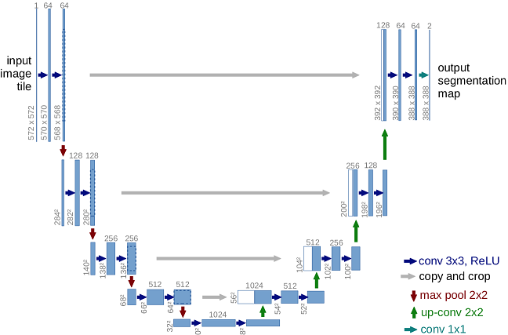
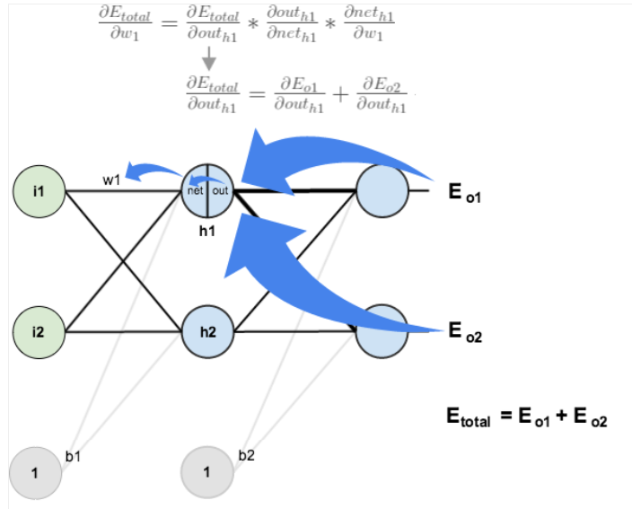

Pretty much any CNN architecture used for image segmentation is a clever combination of Encoder and Decoder paths. A small description of what goes on in the U-Net is given below.
A U-net architecture consists of a specific encoder-decoder scheme: The encoder reduces the spatial dimensions in every layer and increases the channels. On the other hand, the decoder increases the spatial dims while reducing the channels.
It consists of the repeated application of two 3x3 convolutions. Convolution is the process of transforming an image by applying a kernel over each pixel and its local neighbors across the entire image. The kernel is a matrix of values whose size and values determine the transformation effect of the convolution process. Each conv is followed by a ReLU(rectified linear unit used as activation function) and batch normalization. Batch normalization is a technique for training very deep neural networks that standardizes the inputs to a layer for each mini-batch. This has the effect of stabilizing the learning process and dramatically reducing the number of training epochs required to train deep networks. Then a 2x2 max pooling operation is applied to reduce the spatial dimensions. Max Pooling is a pooling operation that calculates the maximum value for patches of a feature map, and uses it to create a downsampled (pooled) feature map. Again, at each downsampling step, we double the number of feature channels, while we cut in half the spatial dimensions.
Every step in the expansive path consists of an upsampling of the feature map(the output of the layer), followed by a 2x2 transpose convolution, which halves the number of feature channels. The transposed convolutional layer is just standard convolution but with a modified input, preserving the dimension. We also have a concatenation with the corresponding feature map from the contracting path, and usually a 3x3 convolutional (each followed by a ReLU). Lastly, the final output layer is a 1x1 convolutional layer with a sigmoid activation and a single filter to output pixel-wise class scores. Here is the architecture we used before our midway presentation:
Pre midway, we implemented the U-Net architecture similar to the one that was first introduced in 2015, and not the one that was followed in our primary reference.Although it performed fairly well, the truth is that it only trained on 5000 image-mask pairs,with only 16 filters in the first layer. These are pretty big concessions especially if we want our results to resemble the results shown in [1]. We also need this trained model to test on images from other bodies with craters similar to the moon's like Mars,Mercury and Vesta. However, we forgot to save the trained model, which prompted us to rerun the U-Net, and this time we follow the architecture recommended in [1]. The figure is given below, and the main differences between this version of the U-Net and the original one are listed in the slides above.

The only difference between our implementation and the one shown above is that the first layer above starts with 112 filters, but we started with 56, which is a big step up from 16. Another improvement from our pre-midway implementation is that we trained on 15000 image-mask pairs instead of 5000. On our own computers, this would have been impossible, so we used Google Colab to run this network and also saved the trained model to Google Drive so that it can be used in the future also. The total runtime was about 8.5 hours, and there is a clear visible improvement in the model's performance when compared with our pre-midway implementation:
Again the loss function used was Binary Cross Entropy (as suggested in [1]) and the metric we used is Binary Accuracy. ADAM optimizer was used and this time we also used a batch size of 10 (8 was used in [1]). The size of our validation set was 5000, and we only ran the model for one epoch and the results are (note that all values are pixel-wise):
For anyone who wants to test the trained model themselves, here is the link to the trained model.
The ResNet is another popular CNN architecture used in computer vision, and it is mainly used for tasks like image classification and object detection. However, the idea that was debuted in the ResNet back in 2015 proves to be very widely applicable. Before we get to the idea, let's first look at a graph :
The graph above is a depth vs training error graph for a normal neural network. Going by usual logic, we would expect that a deep neural network must be overfitting and hence training error must be low. But in practice, training error actually increases as depth increases! Why does this happen? The most common reason is probably the vanishing/exploding gradient problem. The way neural networks update their weights is through a method called "back propagation". Look at the next picture:

The main takeaway is that the weight updates are computed using the famous chain rule. The picture has a sample calculation and you can see how many terms are multiplied to compute a weight update in the first layer. Keep in mind that this is a very small network. If there are around 100 layers, imagine how many terms would have to be multiplied to get a weight update in one of the layers close to the input layer. Now, why is this a problem? Suppose each of these updates is a value less than 0.5. Then, in each iteration, a weight in the first layer would barely update because the product of 100 terms each less than 0.5 is extremely small. This is what we call the vanishing gradient problem. Similarly, if the terms are slightly large, then the update to weights in the first layer would be too large, and convergence to the optimum would be impossible. This is the exploding gradient problem. These are the problems a deep NN usually faces, and this kind of justifies what we saw in the graph above. Now look at the ResNet's depth vs training error graph:

The ResNet seems completely unaffected by the vanishing/exploding gradient nonsense. The reason is that it extensively uses skip connections. The details of why skip connections are so effective won't be discussed, but some intuition will be given. First, this is how a skip connection looks:
In simple words, a skip connection passes the output from one layer to layer deeper in the neural network unaltered and this output is added to the output of the deeper layer. The intuitive explanation behind why this helps with the vanishing/exploding gradient problem is that it provides an alternate pathway for the backprop algo to update weights. For those who understand, a skip connection is actually just an identity function, and its derivative won't hurt weight updates earlier in the NN.
Coming back to our project, we wanted to integrate more of these skip connections/residual blocks into our U-Net to maybe add a couple more convolutional layers. However, upon googling, this experiment had already been performed for crater detection and we decided to test out their architecture and see if actually outperforms our previous architecture.
Here is the architecture :
The only real difference between this architecture and the U-Net architecture we first implemented is the "black arrow" in the picture. The picture shows what the black arrow represents, and if you compare it with our first architecture, this one has more convolutional layers, which we don't have to be too worried about because skip connections are involved. As before, we trained this architecture on 15000 image-mask pairs, with 56 filters in the first layer. The validation set was again, 5000 image-mask pairs. This time we also included Mean IoU (intersection over union) as an additional metric as accuracy is not very reliable in our case.
As before, we trained this architecture on 15000 image-mask pairs, with 56 filters in the first layer. The validation set was again, 5000 image-mask pairs. This time we also included Mean IoU (intersection over union) as an additional metric as accuracy is not very reliable in our case. Here are the values after 1 epoch of training and the program took about 4 hours to run because we were able to use a TPU through google colab.
Remarks:These values are comparable to our previous architecture, and right away it is hard to conclude if the ERU-Net is actually better.The Mean IoU values are decent and this is exactly what we want. Mean IoU is a measure of how similar the predicted images are to the masks. since we are trying to detect more craters than are actually present in the masks, we don't really want a perfect Mean IoU score. Side by side comparision of U-net prediction and ERU-Net prediction on a sample image:
Getting images similar to the ones our models trained on from other planets or bodies was very difficult. The image sizes were too large and cropping them into the exact size and resolution we needed was not possible. However, me managed to get lower quality images from Mercury and our mentor Dr.Guneshwar Thangjam had some cropped images from Vesta and Mars for us to test our models on. There is also a good reason behind picking these three bodies. It is believed that the impact craters on these three bodies resemble those on our moon. So we can expect good preictions from our models. However, we can only visually verify how well the model is doing, because, unlike the moon, we don't have ground truth crater masks for these three bodies. Our primary reference [1] has conducted this experiment for Mars and we are now extending to a couple of images from Mars and Vesta also. Here are the results:


These are pretty remarkable results. In all the moon predictions, the U-Net predicted more or less perfect circles, but if you look at its Mercury predictions, the craters are skewed and not uniform. This is a pretty good reason to believe that the U-Net has learned how to predict a general impact crater.